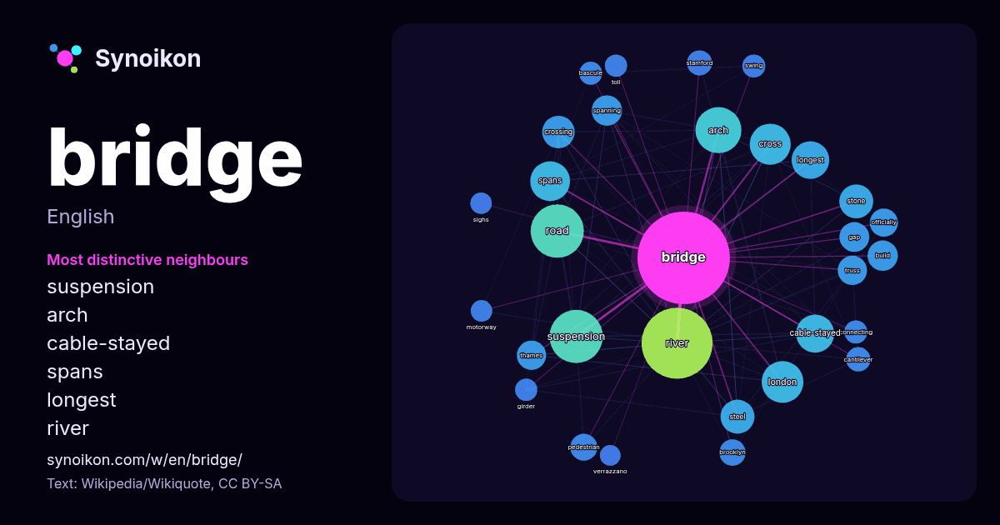

English · word of the day list
bridge
The words found around it in 2282 instances from Wikipedia, Wikiquote, Hacker News.

Most distinctive neighbours
- suspension 73×
- arch 53×
- cable-stayed 45×
- spans 40×
- longest 36×
- river 29×
- spanning 27×
- truss 26×
- thames 24×
- cross 24×
- steel 24×
- crossing 23×
- gap 23×
- pedestrian 21×
- stamford 19×
- cantilever 19×
- road 19×
- stone 18×
- brooklyn 17×
- bascule 17×
× = how many times more often than in general Wikipedia text.
Most frequent neighbours
- river 153
- road 86
- suspension 86
- arch 64
- london 53
- built 52
- cross 51
- spans 48
- cable-stayed 44
- longest 43
- street 43
- steel 35
- stone 35
- railway 34
- type 34
- crossing 32
- city 30
- world 29
- bay 28
- build 28
In context
- A bridge is a structure designed to span an obstacle, such as a river or railway, allowing vehicles, pedestrians, and other loads to pass across. Most Wikipedia snippets · Bridge
- Chevelon Creek Bridge is a historic road bridge located about 12 miles (19 km) southeast of Winslow, in Navajo County, eastern Arizona, United States. Wikipedia snippets · Chevelon Creek Bridge
- The Bridge may refer to: The Bridge (sculpture), a 1997 sculpture in Atlanta, Georgia, US Die Brücke (The Bridge), a group of German expressionist artists Wikipedia snippets · The Bridge
- Since Roman times, several crossings named London Bridge have spanned the River Thames between the City of London and Southwark in central London. The Wikipedia snippets · London Bridge
- atlanto-occipital dislocation. the Bridge to Bridge Bridge to Bridge About the Bridge to Bridge] Bridge to Bridge https://www.uhpbc.net/bridge.html https://trove.nla Wikipedia snippets · Bridge to Bridge
- Contract bridge, or simply bridge, is a trick-taking card game using a standard 52-card deck. In its basic format, it is played by four players in two Wikipedia snippets · Contract bridge
- The Golden Gate Bridge is a suspension bridge spanning the Golden Gate, the one-mile-wide (1.6 km) strait connecting San Francisco Bay and the Pacific Wikipedia snippets · Golden Gate Bridge
- The Devil's Bridge (Welsh: Pont ar Fynach) is a Grade II* listed bridge spanning Afon Mynach, to the edge of the village of Devil's Bridge (named after Wikipedia snippets · Devil's Bridge (Welsh bridge)
More words
- art
- autumn
- bell
- bread
- cat
- city
- climate
- clock
- death
- desert
- dog
- family
- food
- forest
- garden
- god
- gold
- health
- heart
- history
- honey
- horse
- island
- language
- life
- map
- mirror
- money
- mother
- mountain
- nature
- power
- rain
- road
- salt
- science
- shadow
- silence
- song
- star
- storm
- summer
- tea
- time
- train
- truth
- water
- winter
- work
Precomputed on 2026-10-09 with default settings (±5 words, medium corpus). The interactive map can refresh it with live data.